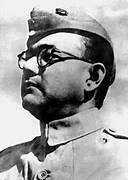
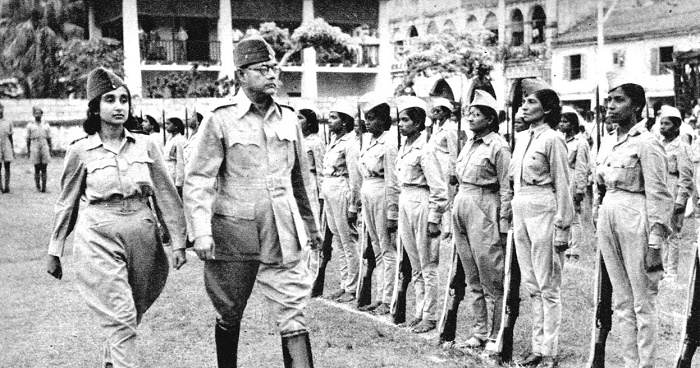
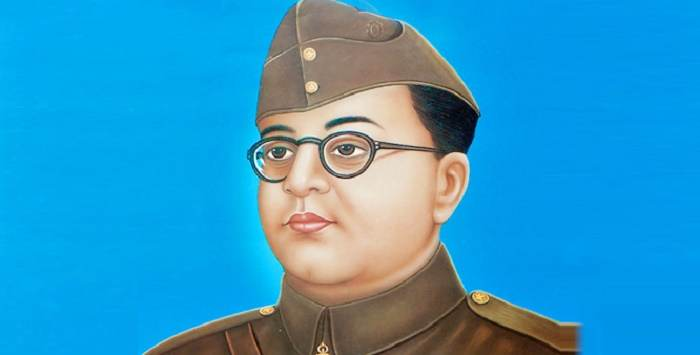
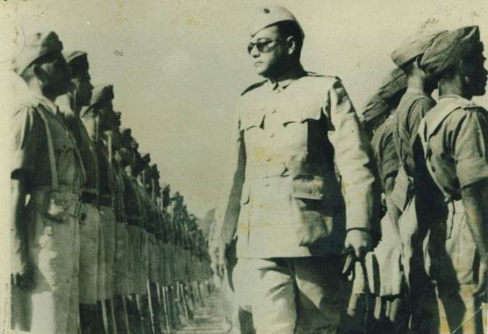
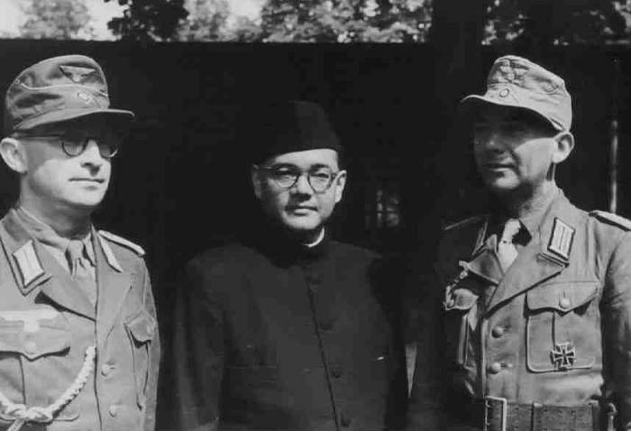
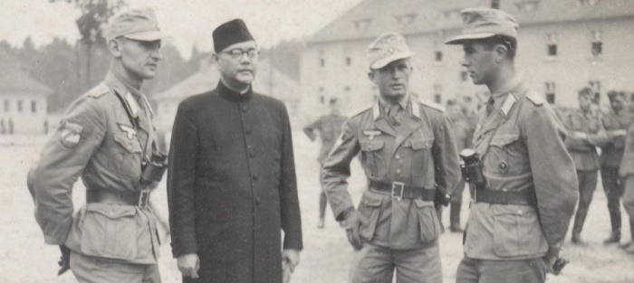
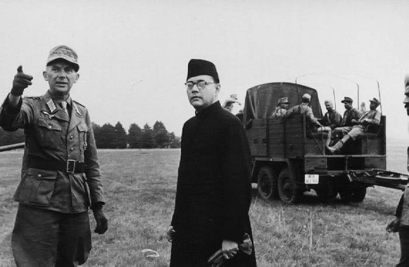

Netaji Subhas Chandra Bose.(23 January 1897 - 18 August 1945) |
 |
Biography:Chandra Bose was an Indian nationalist whose defiance of British authority in India made him a hero among many Indians, but his wartime alliances with Nazi Germany and Imperial Japan left a legacy vexed by authoritarianism, anti-Semitism, and military failure. Wikipedia Born: January 23, 1897, Cuttack, India Died: August 18, 1945, Army Hospital Nanmon Branch, Taihoku, Japanese Taiwan Cause of Death: Third-degree burns from aircrash Height: 6'2" (1.89m) Spouse: Emilie Schenkl(m. 1937-1945) Parents: Janakinath Bose, Prabhabati Bose Children: Anita Bose Pfaff Education: University of Calcutta, Ravenshaw Collegiate School, Bangabasi Morning College, Fitzwilliam College, Cambridge, Presidency University, Kolkata, Scottish Church College, The Open University, University of Cambridge Important works: Adipurush Written: The Indian Struggle Party affiliation: Indian National Congress, All India Forward Bloc |
 |
|  | Subhash Chandra Bose was one of the most celebrated freedom fighters of India. He was a charismatic influencer of the youth and earned the epithet ‘Netaji’ by establishing and leading the Indian National Army (INA) during India’s struggle for independence. Although initially aligned with the Indian National Congress, he was ousted from the party due to his difference in ideology. He sought assistance from Nazi leadership in Germany and Imperial forces in Japan during the World War II, to overthrow the British from India. His sudden disappearance post 1945, led to surfacing of various theories, concerning the possibilities of his survival. Childhood & Early Life Netaji Subhash Chandra Bose was born on 23 January, 1897 in Cuttack (Orissa) to Janakinath Bose and Prabhavati Devi. Subhash was the ninth child among eight brothers and six sisters. His father, Janakinath Bose, was an affluent and successful lawyer in Cuttack and received the title of "Rai Bahadur". He later became a member of the Bengal Legislative Council. Subhash Chandra Bose was a brilliant student. He passed his B.A. in Philosophy from the Presidency College in Calcutta. He was deeply influenced by Swami Vivekananda's teachings and was known for his patriotic zeal as a student. In an incident where Bose beat up his professor (E.F. Otten) for his racist remarks, brought him notoriety as a rebel-Indian in eyes of the government. His father wanted Netaji to become a civil servant and therefore, sent him to England to appear for the Indian Civil Service Examination. Bose was placed fourth with highest marks in English. But his urge for participating in the freedom movement was intense and in April 1921, he resigned from the coveted Indian Civil Service and came back to India. In December 1921, Bose was arrested and imprisoned for organizing a boycott of the celebrations to mark the Prince of Wales' visit to India. During his stay in Berlin, he met and fell in love with Emily Schenkl, who was of Austrian origin. Bose and Emily were married in 1937 in a secret Hindu ceremony and Emily gave birth to a daughter Anita in 1942. Shortly after the birth of their daughter, Bose left Germany in 1943 to come back to India. |
Political Career
Association with Indian National Congress
Initially, Subhash Chandra Bose worked under the leadership of Chittaranjan Das, an active member of the Congress in Calcutta. It was Chittaranjan Das, who along with Motilal Nehru, left Congress and founded the Swaraj Party in 1922. Bose regarded Chittaranjan Das as his political guru. He himself started the newspaper ‘Swaraj’, edited Das’ newspaper ‘Forward’ and worked as the CEO of Calcutta Municipal Corporation under Das’ stint as Mayor. Subhash Chandra Bose played an important role in enlightening the students, youths and labourers of Calcutta. In his fervent wait to see India as an independent, federal and republic nation, he emerged as a charismatic and firebrand youth icon. He was admired within the congress for his great ability in organization development. He served several stints in prison for his nationalist activities during this time.
Dispute with the CongressIn 1928, during the Guwahati Session of the Congress, a difference of opinion surfaced between the old and new members of the Congress. The young leaders wanted a "complete self-rule and without any compromise’ while the senior leaders were in favour of the "dominion status for India within the British rule". The differences between moderate Gandhi and aggressive Subhash Chandra Bose swelled to irreconcilable proportions and Bose decided to resign from the party in 1939. He went on to form the Forward Bloc the same year. Although he voiced his dislike for the British often in his correspondences, he also expressed his admiration for their structured way of life. He met with the leaders of the British Labor Party and political thinkers including Clement Attlee, Harold Laski, J.B.S. Haldane, Arthur Greenwood, G.D.H. Cole, and Sir Stafford Cripps and discussed the possibilities that an independent India might hold. |
 |
|  |
Formation of the INABose vehemently opposed the Congress decision to support the British during the Second World War. With the aim to initiate a mass movement, Bose called out to Indians for their whole-hearted participation. There was tremendous response to his call “Give me blood and I will give you freedom” and the British promptly imprisoned him. In jail, he declared a hunger-srtike. When his health deteriorated, the authorities, fearing violent reactions, released him but put him under house-arrest. In January, 1941, Subhash made a planned escape and reached Berlin, Germany via a detour through Peshawar. Germans assured him their full support in his endeavours and he gained allegiance of Japan as well. He took a perilous journey back east and reached Japan where he assumed command over 40,000 soldiers recruited from Singapore and other south East Asian regions. He called his army the ‘Indian National Army’ (INA) and led the same to capture the Andaman and Nicobar islands from the British and rechristened it as Shaheed and Swaraj Islands. A provisional “Azad Hind Government” started functioning in the captured territories. The INA or the Azad Hind Fauj stared for India and crossed Burma Border, and stood on Indian soil on March 18, 1944. Unfortunately, the tide of the World War turned and the Japanese and German forces surrendered which forced him to call off further advancement. |
DeathNetaji disappeared mysteriously soon after the retreat. It is said that he went back to Singapore and met Field Marshal Hisaichi Terauchi, head of all military operations in South East Asia who arranged for him a flight to Tokyo. He boarded a Mitsubishi Ki-21 heavy bomber from Saigon Airport on August 17, 1945. The following day the bomber crashed shortly after take-off after a night halt in Taiwan. Witnesses report that Bose sustained intense third degree burns in the process. He succumbed to his injuries on Aug 18, 1945. He was cremated on August 20 in Taihoku Crematorium and his ashes were laid to rest at the Renk?ji Temple of Nichiren Buddhism in Tokyo. |
 |
Bose’s comrades who were stranded in Saigon waiting to be transported never saw his body. Nor did they see any photographs of his injuries. They refused to believe that their hero was dead and hoped that he evaded detection by the British-American forces. They believed whole heartedly that it was just a matter of time that Netaji will gather up his army and conduct a march towards Delhi. Soon people began to report sighting of the hero and even Gandhi expressed his scepticism about death of Bose. Post-independence, people started to believe that Netaji had adopted an acetic life and became a Sadhu. The mysteries surrounding Bose’s death took upon mythic proportions and perhaps symbolized the hope of the nation. The government of India set up a number of committees to investigate the case. First the Figgess Report in 1946 and then the Shah Nawaz Committee in 1956, concluded that Bose had indeed died in the crash in Taiwan. Later, the Khosla Commission (1970) concurred with the earlier reports, the reports of Justice Mukherjee Commission (2006) said, "Bose did not die in the plane crash and the ashes at Renkoji temple are not his". However, the findings were rejected by the Government of India. In 2016, following the declassification of a report handed over by the Japanese government to the Indian Embassy in Tokyo in 1956, titled "Investigation on the cause of death and other matters of the late Subhash Chandra Bose" confirmed the Indian National Hero’s death in Taiwan on August 18, 1945.
IdeologyBose’s correspondences prove his faith in democracy in Independent India. Bose’s primary ideology was always the freedom of his motherland even if meant taking help from fascists like Mussolini or Hitler. LegacyNetaji Subhash Chandra Bose has left deep impact on the psyche of his countrymen. His slogan, ‘Jai Hind’ is still used in reverence to the country. The International airport in Kolkata has been named Netaji Subhash Chandra Bose International Airport to commemorate the charismatic leader. In Popular MediaMany documentaries, TV series and films have been made on the life of netaji. In 2004, revered director Shyam Benegal made a biopic ‘Netaji Subhas Chandra Bose: The Forgotten Hero’ that received immense critical acclaim in India as well as in international film festivals. |
 |